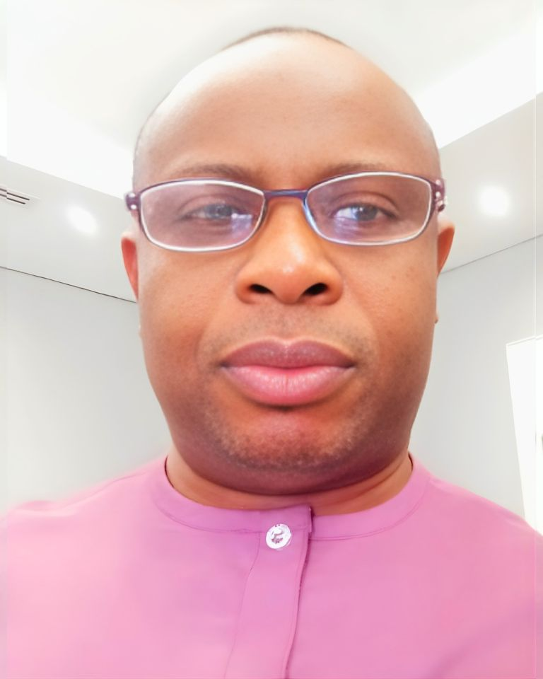
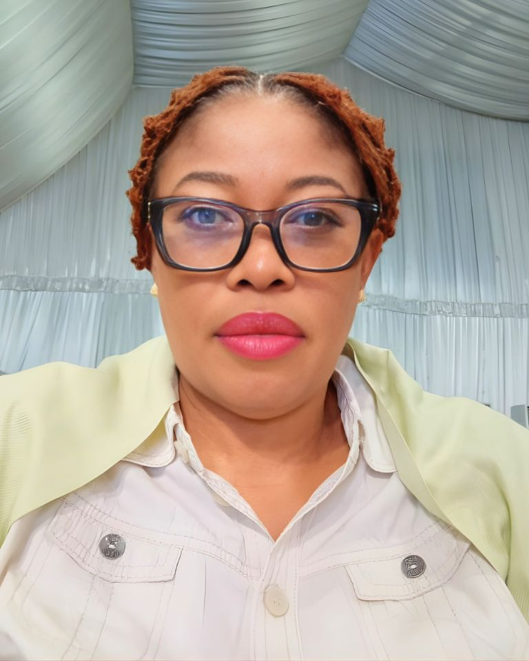
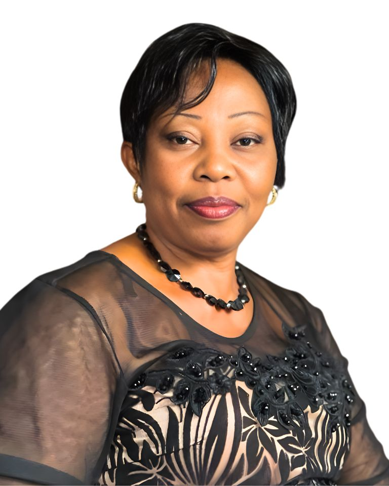
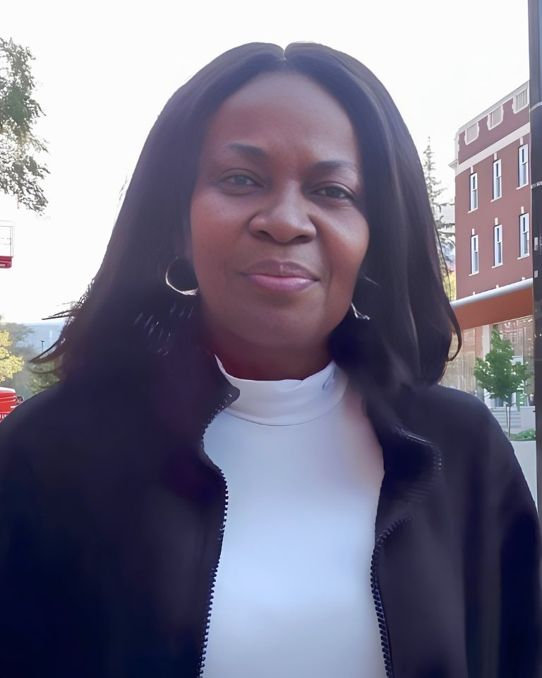
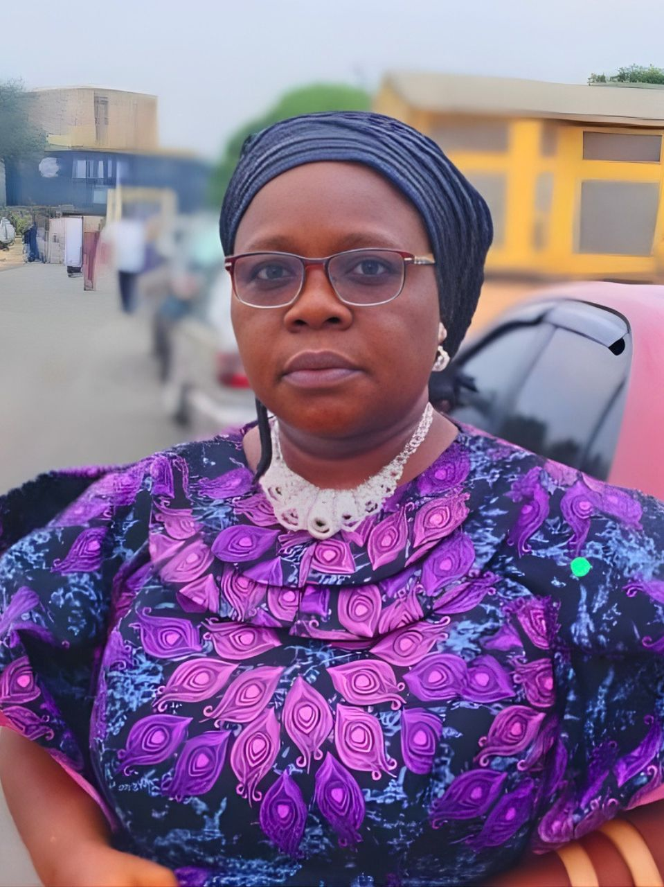
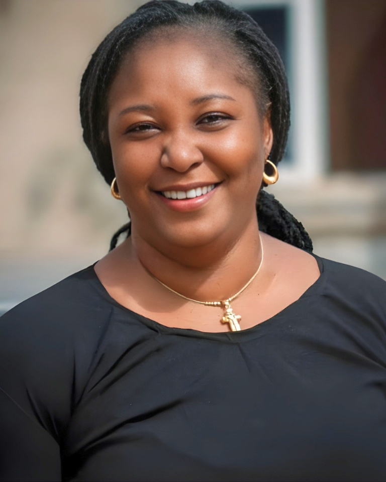
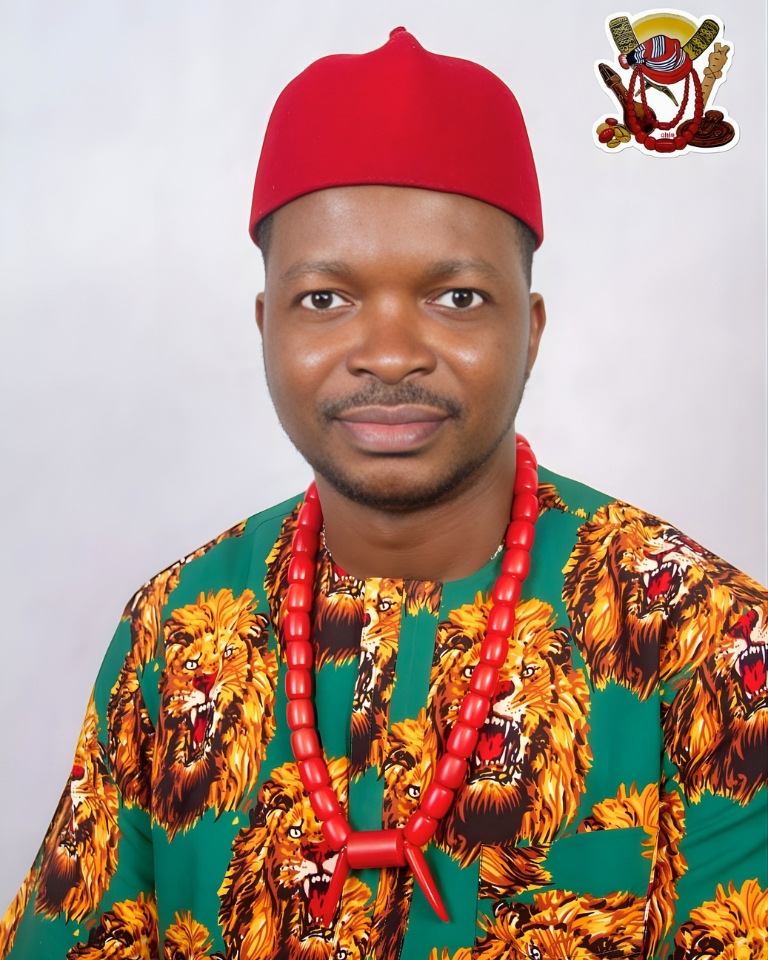
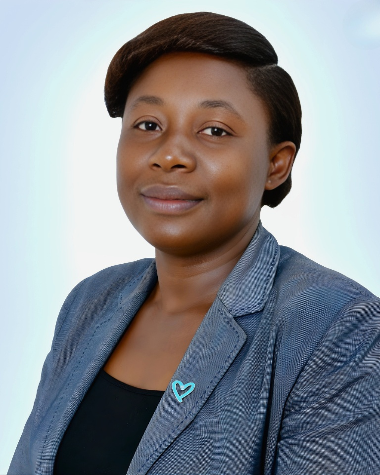

Moments from the Inauguration of Local Organising Committees and Highlights of the South East Migration Dialogue


More photos will be added after the main event in May 2026. Follow us on social media for updates.
Distinguished contributors and committee members supporting SEMD 2026

Rev. Fr. Dr. Anyanwu serves as the Thematic Lead on Returns, Readmission, and Reintegration (RRR) for CSOnetMADE. A renowned scholar-practitioner in migration studies, he brings deep theological and sociological perspectives to migration governance. His work focuses on the humane reintegration of returnees, addressing the psycho-social and spiritual dimensions of return migration. He has pioneered community-based reintegration models that engage traditional and religious institutions in the sustainable reintegration of migrants, ensuring that returnees are not stigmatized but are empowered to contribute meaningfully to their communities.

Goodness Mgbaja coordinates CSOnetMADE's migration governance activities in Ebonyi State. She has been instrumental in building grassroots awareness on the dangers of irregular migration and the benefits of regular migration pathways. Her advocacy has led to the establishment of community migration watch groups across Ebonyi State that serve as early warning systems against human trafficking syndicates. She works closely with state government officials, traditional rulers, and youth organizations to create a comprehensive migration governance ecosystem at the state level.
Onyemaobi Eucharia leads CSOnetMADE's operations in Anambra State with a focus on policy advocacy and stakeholder engagement. She has successfully facilitated dialogues between civil society organizations and the Anambra State government on the establishment of a state-level migration coordination structure. Her work in promoting safe migration education in secondary schools and vocational centers has reached thousands of young people across the state, equipping them with the knowledge to make informed migration decisions.
Dr. Samuel Ogbe is a distinguished academic, researcher, and entrepreneurship development expert at Michael Okpara University of Agriculture, Umudike. With a Ph.D in Agricultural Economics (Agricultural Finance) and extensive experience in entrepreneurial finance and social investment, he has been a driving force in youth empowerment and enterprise development. As a multiple award-winning lecturer recognized for innovation and excellence, he has facilitated numerous skill acquisition programs, entrepreneurial training workshops, and industrial tours. He coordinates the SIWES program for the College of Management Sciences and has been instrumental in embedding entrepreneurship education into the university curriculum. His research on microfinance outreach, credit demand, and agro-enterprise financing provides critical insights for creating economic alternatives to irregular migration in the South East region.

Prof. Tracie Chima Utoh-Ezeajugh is a celebrated Nigerian playwright, scholar, and Professor of Theatre and Film Design at Nnamdi Azikiwe University (NAU) Awka. She currently serves as Director of the Centre for Migration Studies (CMS-NAU) and is an elected member of the University's 10th/11th Governing Council. A leading voice in African humanities, she delivered the Nnamdi Azikiwe University 26th Inaugural Lecture in 2015. She has executed landmark projects and published widely in migration, gender, and cultural studies, including a British Museum EMKP Large Grant (2021–2024), Firebird Foundation Fellowship, and projects for the ILO, GIZ, and Ethnocentrique. She is a Bellagio Rockefeller Fellow, ACLS African Humanities Program Fellow, and 2015 ASA Presidential Fellow. An Independent Non-Executive Director of University Press PLC and Fellow of the Society of Nigeria Theatre Artists, she served 13 years in national leadership including as 1st National Vice President. She is a member of the Technical Working Group (TWG) on Migration and edits the Journal of African Migrations.

Ebele Okpala is a leading migration scholar and the Deputy Director of the Centre for Migration Studies at Nnamdi Azikiwe University, Awka. Her research focuses on intra-African migration, gender and migration, and the socio-economic impacts of migration on sending communities. She has published extensively on migration governance in West Africa and has consulted for international organizations on migration policy formulation. Her academic leadership ensures that the SEMD 2026 is grounded in rigorous research and evidence-based policy recommendations.

Angela John-Njoku brings valuable public sector experience to the SEMD 2026 as the Permanent Secretary covering duties at the Imo State Ministry of Special Projects. Her administrative expertise and understanding of state government operations have been critical in facilitating inter-ministerial collaboration on migration governance in Imo State. She has championed the mainstreaming of migration considerations into Imo State's development planning, ensuring that migration is recognized as a cross-cutting issue requiring coordinated government response.
Dr. Kene-Okafor is a dedicated member of CSOnetMADE's South East Zonal team, contributing her expertise in public health and community development to the network's migration governance initiatives. Her work focuses on the health vulnerabilities of migrants and the strengthening of health systems to address the needs of mobile populations. She has been instrumental in designing health screening protocols for returnees and advocating for the inclusion of migrant health in state health sector strategic plans across the South East region.
Hon. Ify Mercy Nwankwo is an active member of CSOnetMADE Abia, contributing her legislative and community development experience to the network's migration governance advocacy. She has been instrumental in mobilizing grassroots support for the South East Migration Dialogue and facilitating engagement between civil society and government institutions in Abia State. Her work focuses on ensuring that the voices of marginalized communities are represented in migration policy discussions.

Dr. (Mrs.) Ifeoma Enyinnaya Igwe serves as the Enugu State Coordinator for CSOnetMADE, where she leads migration governance initiatives and stakeholder engagement across the state. She has been pivotal in building partnerships between civil society organizations, government agencies, and international development partners to address migration challenges in Enugu State. Her advocacy for safe migration practices and protection of vulnerable migrants has contributed to increased awareness and policy action at the state level.

Dr. Laz Ude Eze is a committed member of CSOnetMADE Abia, bringing his expertise in public health and development to the network's migration governance work. He contributes to research, policy advocacy, and community engagement activities aimed at addressing the health and social dimensions of migration in Abia State. His involvement in the South East Migration Dialogue strengthens the evidence base for policy recommendations and ensures that health considerations are integrated into migration governance frameworks.

Okoye Hope Nkeiruka is the Executive Director of the Integrated Anti-Human Trafficking and Community Development Initiative (INTACOM Africa) and serves as Team Lead for Labour Migration at CSOnetMADE. She is a leading anti-trafficking advocate and labour migration specialist in Nigeria, with extensive experience in victim protection, policy advocacy, and community-based prevention programs. Through INTACOM Africa, she has rescued and rehabilitated numerous victims of human trafficking and has been instrumental in shaping Nigeria's labour migration policies. Her work on ethical recruitment, migrant worker protection, and bilateral labour agreements has positioned her as a key voice in the national discourse on safe and regular labour migration pathways.